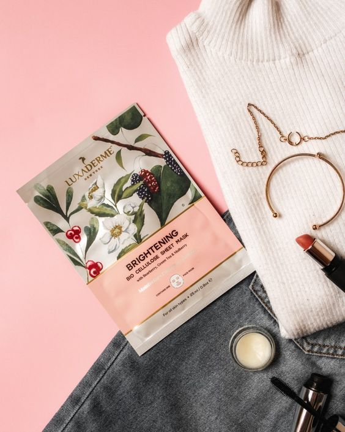
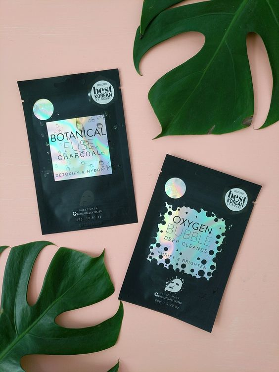
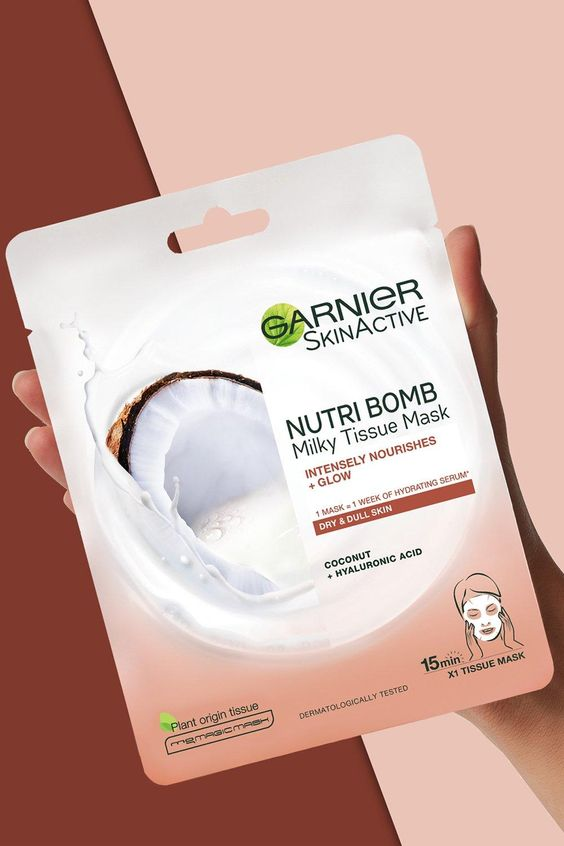

|

|
If you've come to bask in the goodness of good ol' Ayurveda, you've come to the right place.
A pioneer in
the luxury Ayurvedic segment, this brand has loyal fans from Michelle Obama to Kalki Koechlin.
This particular mask incorporates a mix of mulethi, green tea and jasmine flower extract to restore
youthful
radiance and brighten uneven skin tone.
BONUS: This mask is biodegradable and brims with the popular Varnya herbs
|
Our story goes way back when a hilarious meme of a woman trying a bubble sheet
mask for the first time
went viral.
Now we thought this was just a fun gimmick till we actually tried one of these.
And by
one of these, we mean Glamglow's Bubblesheet.
All you need is 3 minutes!
This bamboo charcoal-infused sheet mask activates an oxygenating and
tingling 3D bubbling experience that instantly detoxifies and removes makeup.
BONUS: These first-of-its-kind oxygen bubbles increase your circulation, ensuring oxygen
and nutrients to every skin cell.
|

|
|

|
Garnier Nutri Bomb Almond Milk hydrating glow enhancing milky sheet mask for dry and uncomfortable skin.
Plump dry skin with moisture, intensely nourish and restore radiance for skin that glows! With a vegan
formula, these face tissue masks are created with ultra-thin tissue & infused with 1 week's worth of hydrating
serum.
When skin is dry, it needs an intense hit of hydration to replump it with moisture; so give it a nourishing
mask moment.
Indulge yourself with our first sheet mask soaked in a milky serum to intensely nourish and rehydrate dry skin
in 15 min.
BONUS:Nutri Bomb Milky Tissue Mask was easy to use. It fits face well, smelt amazing and stayed
in place for 15 minutes.
|